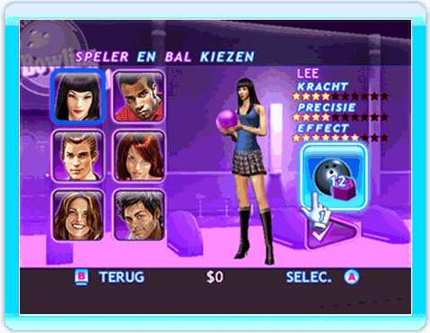
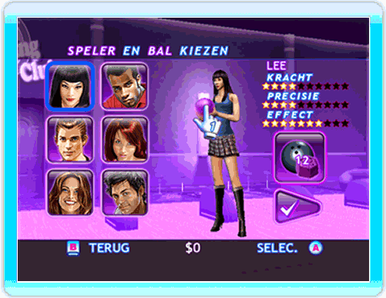
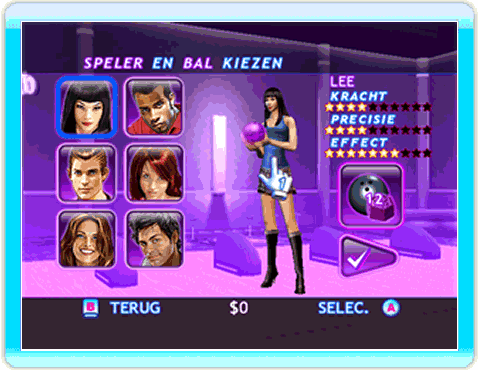

Balgewicht

Met een zwaardere bal heb je meer kracht, maar minder precisie.
Baldesign

Richt met de Wii-afstandsbediening op de bal en druk op de A-knop om het design van de bal te veranderen.
Speleroutfit

Richt met de Wii-afstandsbediening op een personage en druk op de A-knop om de outfit van dat personage te veranderen.